- 1Open the link
github.com/BaNburger/AmbitiousEntrepreneurship - 2Go to modules
then 05-solution-space - 3Click the lecture PDF
M05_Lecture_Solution-Space.pdf, download top right
Module 05 · Ambitious Entrepreneurship
The Solution Space
Of all the ways to solve this problem, why this one?
Course path
- 00
- 01
- 02
- 03
- 04
- 05
- 06
- 07
- 08
- 09
- 10
- 11
- 12
Course material · scan now
All slides live on GitHub
The newest version, free, no account needed
Where we are · the course
From one problem to many solutions
Thirteen sessions from first idea to first revenue. What teams have by now:
A problem people confirmed
Problem space (M03)
Problem space (M03)
A landing page with its line
Validating problems (M04)
Validating problems (M04)
Sign-ups from their segment
Validating problems (M04)
Validating problems (M04)
Check-in · Show of hands
Did your page beat your line?
Hands up for your band. One click on the band per hand
Abovethe lineyour page beat it
Underthe linea result, not a failure
No linewrittendraw it first next time
Pivot or persevere
Under your line? That is a decision, not a failure
Every test ends in one of two moves, and both are progress
Accountability
Report what you did, not what you planned
Chapter 1 of 9
Previously on Ambitious Entrepreneurship
Four pictures from earlier sessions that you need to follow today.
Previously · Problem space (M03)
You started left. Today, the right side
Previously · Validating problems (M04)
You climbed to a number
Previously · Validating problems (M04)
Your page asked for one action
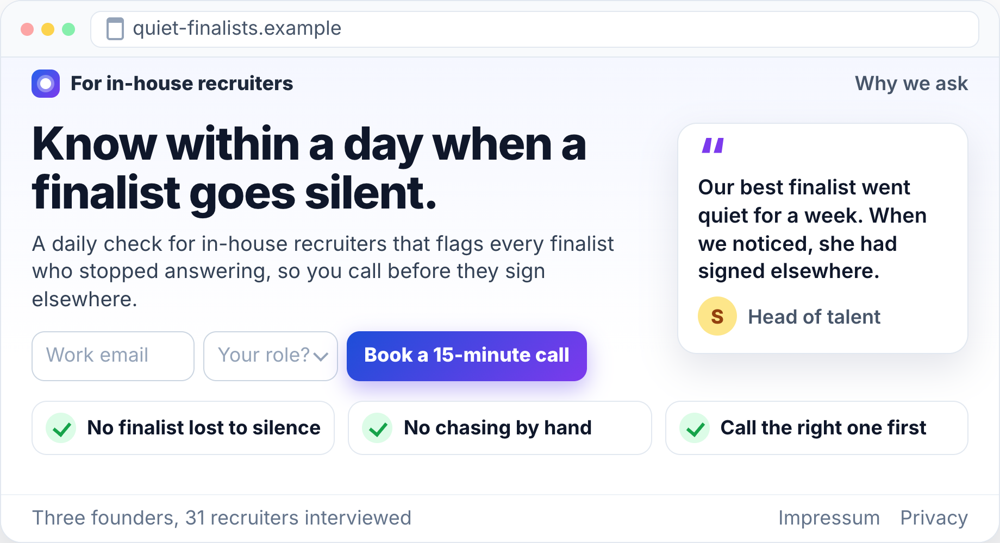
From today, that button leads to your click dummy, a clickable mock-up with nothing behind it.
Previously · Validating problems (M04)
Real validation comes through the credit card
Today's question · hands
Of all the ways to solve this problem, why this one?
Chapter 2 of 9
Your presentations
Your line next to your number, three minutes per team.
Your presentations · make it credible
Show us where you're at in 3 minutes or less!

Facts
The benchmark behind your line

12
Usage or surveysNumbers
Line next to your rate, visitors per student, conversion per source

Quotes
Two answers to "why did you sign up?"

Images
Page above the fold, analytics by source
Verdict: pass or fail, and what it triggered
What did you do?What did you learn?How can we help?
Input 1 of 4 · Chapter 3 of 9
Widen it: many solutions to one problem
Write several solutions to your tested problem, then let what people do pick one.
Input 1 of 4 · Widen it · three questions
Before you pick, how many solutions?
1
Why write several solutions before you pick one?
2
How do you pick the winner?
3
What if every solution falls under your line?
Cornerstone · Finding ideas (M02)
Think big, test small, now for solutions
Same picture, same discipline, a new object
Think big
Go wide before you go deep
Several solutions to one tested problem
Why it matters
Side by side beats one by one
33 novice designers, live ads, 1.18 million impressions
Worked example · made up
Three solutions, one without software
An appflags finalists who went quiet
A recruitercalls every finalist on day 2
 A WhatsAppcheck-in sent by hand, daily
A WhatsAppcheck-in sent by hand, dailyToday they use a spreadsheet and a Friday check, and lose finalists after a week
How-to · AI ideation · a skill, not a prompt
Use AI to go wide, never to decide
skills/go-wide/SKILL.md
Use when a tested problem needs solutions
1 Explore the painpoint. Look for counterintuitive problems nobody has paid attention to yet
2 Search for existing solutions. Summarize them
3 Brainstorm solutions that differ from all of them
Rule at least one without software. Never rank them
Good three that differ in kind. Weak three versions of one app
Your agentgo-wide
Go wide on this problem. Finalists go quiet and recruiters notice too late.
sign-up-calls.txt
sign-up-calls.txt
Three that differ in kind. An alert app, a recruiter who calls on day 2, a daily check-in by message. Not ranked, your segment does that.
Last time two were the same app. Add a rule to the skill.
Skill updated. Solutions must differ in who does the work.
Reply…
- 1Write the skill once
- 2Give it your notes
- 3Fix the skill, not the output
- 4Keep three
AI widens the list. Your segment picks.
Now you · alone · 3 minutes
Write three solutions, one without software
Output
Three solutions per founder
Test small
Converge by what people did
Not by what you like. Against a kill line set first
Divergence vs. convergence
Diverge with ideas. Converge with data
Rule
Two modes, two toolboxes. Never in one meeting.
Evolutionary prototyping
One dummy per founder. The line picks the winner
Build to throw away
Your first dummies are made to be thrown away
Done is better than perfect
Build
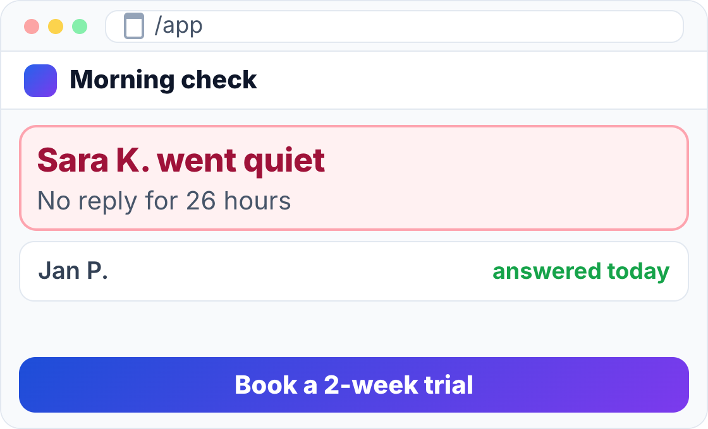
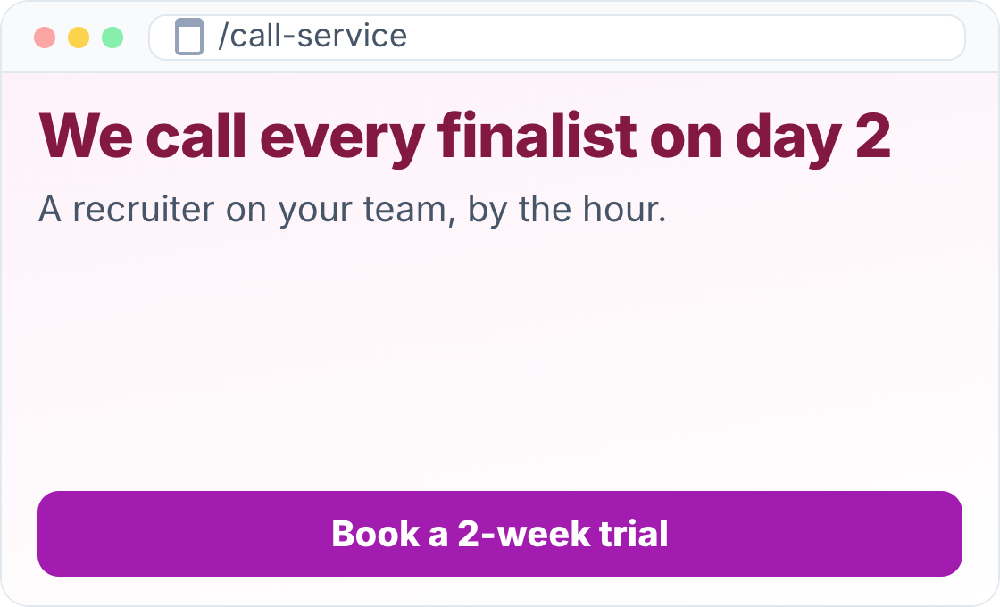
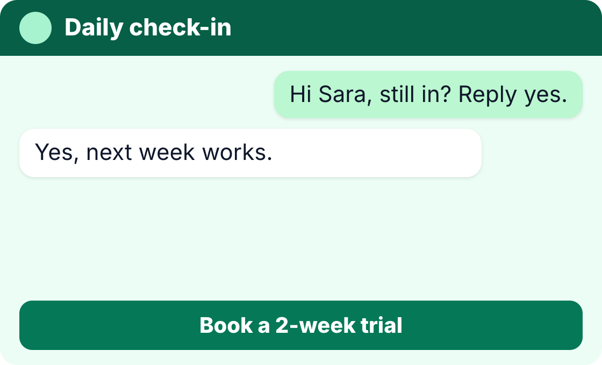
Measure7 demos7 demos7 demos
LearnBinKeep, next roundBin
Pivoting · type 1
A type 1 pivot changes the solution
Same problem. App to product, B2B to B2C, sale to subscription
Pivoting · type 2
A type 2 pivot goes back to the problem
A new problem space and a clean cut. Slow and hard on the team
Input 1 of 4 · Widen it · the answers
Widen it: several solutions, the line picks
1
Why write several solutions before you pick one?
Side by side beats one by one, and the best may need no software
2
How do you pick the winner?
By what people did with each, against a line set first, not by what you like
3
What if every solution falls under your line?
You pivot. Type 1 tries another solution, type 2 goes back to the problem
Input 2 of 4 · Chapter 4 of 9
Sharpen it: ten times better on one thing
Say in under ten words why your segment would switch, and prove it.
Input 2 of 4 · Sharpen it · three questions
Why would they switch?
1
What is a value proposition?
2
Who is it for?
3
How much better must it be?
Value proposition
A value proposition matches an offer to a need
OFFERS
NEEDS
Build something that is
10times better
than what your users have now.
Not better than a competitor's feature list.
The 10x rule · the author's example
 PayPal was 10 times better than a check
PayPal was 10 times better than a check
On eBay, one dimension, speed. Sellers also knew the funds were good
Why ten times
A loss weighs about twice as much as a gain
Mean of 607 estimates from 150 articles, 1992 to 2017. Bars to scale
Value proposition canvas
Four boxes, one segment
Value proposition canvas · the author's example
 iPod: a thousand songs in your pocket
iPod: a thousand songs in your pocket
The music player Osterwalder uses to explain his canvas
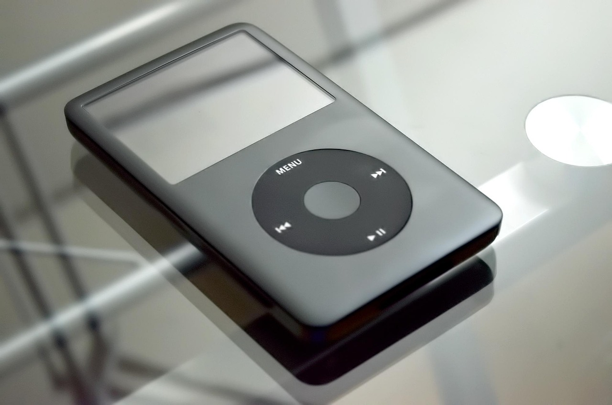
Painpoint
Copying songs back and forth, because storage is tiny
Value proposition
A thousand songs in a pocket
Customer segment
People who listen to music on the go
Competition
Earlier players with tiny storage
Customer segment
Start where suffering meets willingness to pay
Who really
suffers?
suffers?
Who really
pays to fix it?
pays to fix it?
Your
segment
segment
Competition
Your real competitor is what they use today
What they use todayA spreadsheet, an email, an intern, or nothing
Worked example · made up · nothing by hand
Your calls fill the four boxes. Your agent types
Painpoint
Finalists go quiet, and we notice at the Friday check · heard from Lena, Sam, Ayla
Value proposition
Know within an hour that a finalist went quiet · heard from 4
Customer segment
In-house recruiters, the head of talent pays · assumed, ask Sam
Competition
A spreadsheet and a Friday check · heard from Lena, Ayla
Your agentfill-canvas
Fill the four boxes from these calls. Name who told us. Mark everything nobody said as assumed.
sign-up-calls.txt
sign-up-calls.txt
Done. Three boxes heard, with names. Who pays is assumed, nobody said it. Ask Sam on Thursday.
Reply…
The 10x test
Pick one dimension. Be 10 times better there
Under 10 words. 10x on everything is 1x on everything
Speed10x
Cost1x
Access1x
Quality1x
Simplicity1x
Scale1x
0x1x5x10xTimes better than what they use today
Worked example · made up
An hour, not a week
Bars drawn to scale
Now you · alone · 3 minutes
Write your 10x line
Output
One 10x line per solution
Input 2 of 4 · Sharpen it · the answers
Sharpen it: one segment, one dimension, 10x
1
What is a value proposition?
An offer matched to a need, said in under ten words and backed by what you heard or measured
2
Who is it for?
One segment, where suffering meets willingness to pay, against what they use today
3
How much better must it be?
Ten times better on one dimension, because a loss weighs about twice a gain
Input 3 of 4 · Chapter 5 of 9
Cut it: one feature, the rest by hand
Cut your solution to the one feature that delivers its 10x, and fake the rest.
Input 3 of 4 · Cut it · three questions
How little must you build?
1
What goes into your first dummy?
2
What may stay fake behind it?
3
When is it an MVP?
Your prototype
Your first dummy is smaller than you think
Previously · Finding ideas (M02)
Decide what you won't build
Strong constraints leave few implementations
Page vs. dummy
The page names benefits. The dummy builds one
Your page names the benefits
Your dummy builds the one that is 10x
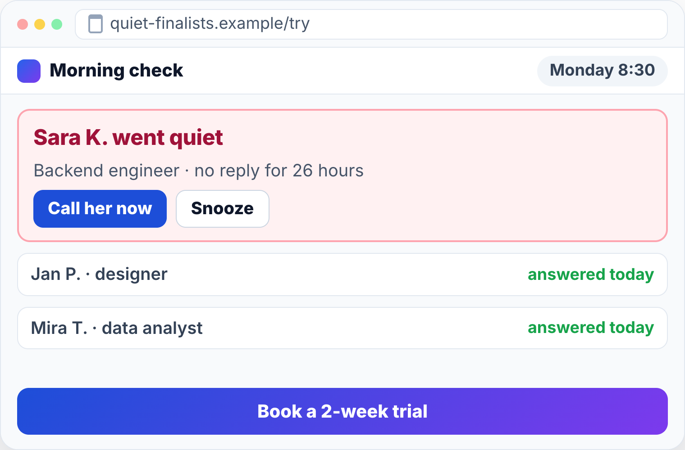
One iteration should not take more than
4hours
Don't lie!!!
Counting only the time you were "really" working is lying.
Tech solution & business solution
Solve the business before the tech
"But I cannot build a maglev-monorail in 4 hours or less!"
BUSINESS SOLUTION
Does the market need it?
What will it pay?
Solve this first.
It sets your tech constraints.
TECH SOLUTION
Can we deliver it at scale?
Reliably, on a budget?
Must fit the business.
The simplest one wins.
Think interface first
Every app is an interface on top of a lot of work
Smoke and mirrors
If anything behind it worked, would they love it?
Smoke and mirrors
Fake the magic. Test the wish
The wisha fresh coffee within 10 minutes
The interfaceCoffee nowone button, nothing else
The magic, fakeda person on a bike, not a delivery network
Smoke and mirrors
Customers don't care HOW you do it!
Research · Wizard of Oz · the first example
Behind the curtain, a person plays the computer
A "listening typewriter" in 1983, before speech recognition worked
The userdictates a letter to a computer
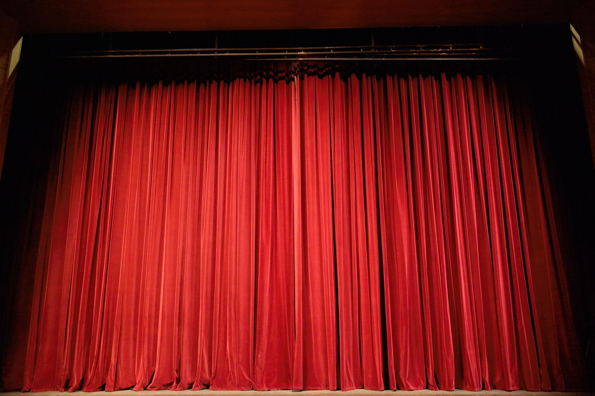
The curtain
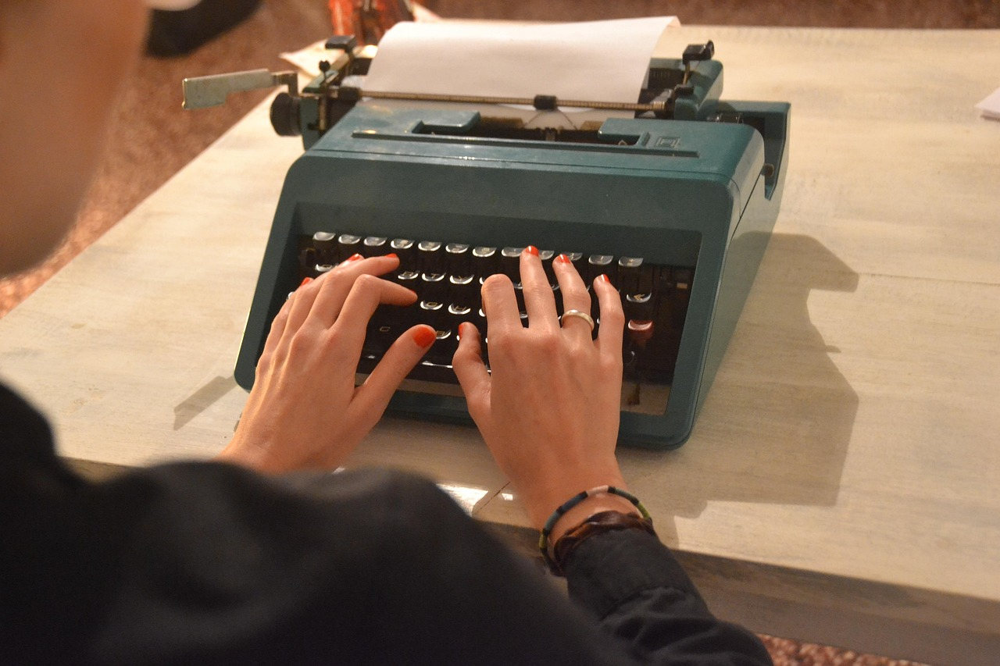
The wizarda typist next door types every word
Some versions matched or beat handwriting and dictation, on first use
MVP. The smallest thing that can trigger validation (a wallet opening).
Worked example · made up
One alert, sent by hand, is an MVP
ONE FEATURE
The alert when a finalist goes quiet
INTERFACE
Three screens, the last one asks
MANUAL
You check the hiring tool by hand every hour and send the alert
OFFER
A 2-week trial for one team, then a monthly price
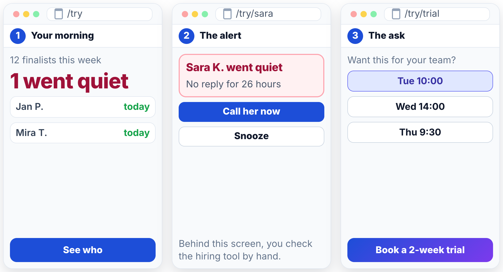
Now you · as a team · 3 minutes
Cut to one feature. Split real from manual
Output
Your MVP in one sentence
Input 3 of 4 · Cut it · the answers
Cut it: one feature, the magic by hand
1
What goes into your first dummy?
The one feature that delivers your 10x, and a list of what you won't build
2
What may stay fake behind it?
Everything behind the interface. A person can play the computer
3
When is it an MVP?
When it is the smallest offer someone in your segment could pay for
Input 4 of 4 · Chapter 6 of 9
Show it: a click dummy people try
Build a click dummy in hours, not weeks, and show it to people from your segment.
Input 4 of 4 · Show it · three questions
How do people try it?
1
How fast can you build a click dummy?
2
How do you show it?
3
What counts as a result?
The very first mock-up
A click dummy is the mock-up. Signal, not proof
Build-Measure-Learn
AI tilts the tide towards less engineering
A quarter of  YC's Winter 2025 founders said over 95% of their code was AI-written
YC's Winter 2025 founders said over 95% of their code was AI-written
Build
Building is no longer the bottleneck. Measuring and learning is.
How-to · QuackSync · step 1 of 6
Paste your value proposition, not a feature list
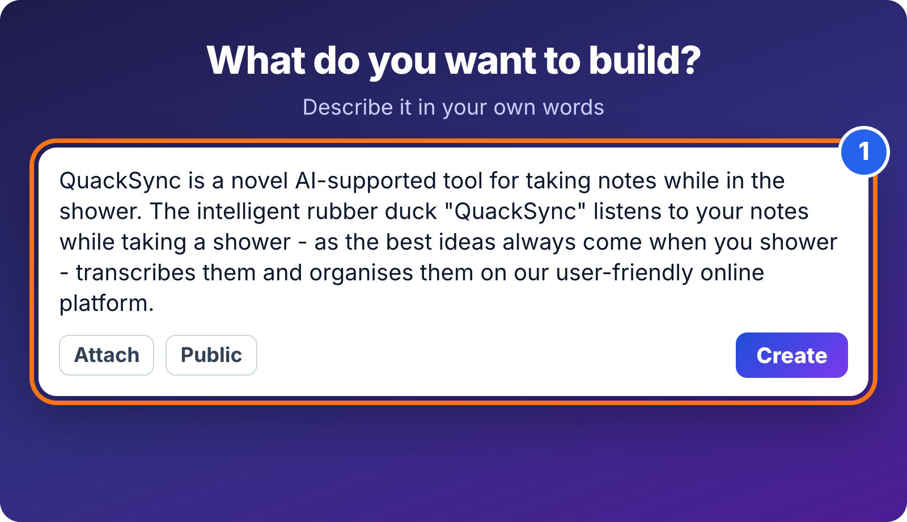
- 1Paste your pitch
- 2Answer narrowly
- 3Click through
- 4Delete inventions
- 5Publish one link
- 6Link your button
Segment, pain, value. No tech stack.
How-to · QuackSync · step 2 of 6
It asks before it builds. Tick one box
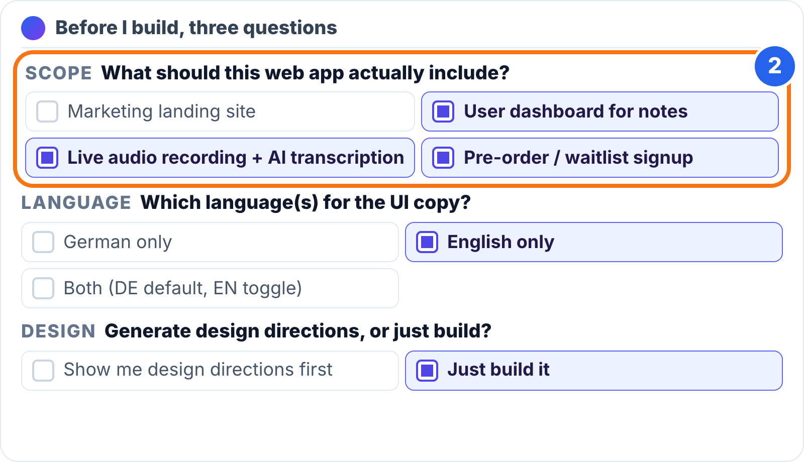
- 1Paste your pitch
- 2Answer narrowly
- 3Click through
- 4Delete inventions
- 5Publish one link
- 6Link your button
A click dummy needs the one path. Not a dashboard, not audio.
How-to · QuackSync · step 3 of 6
Half an hour later, you can click it
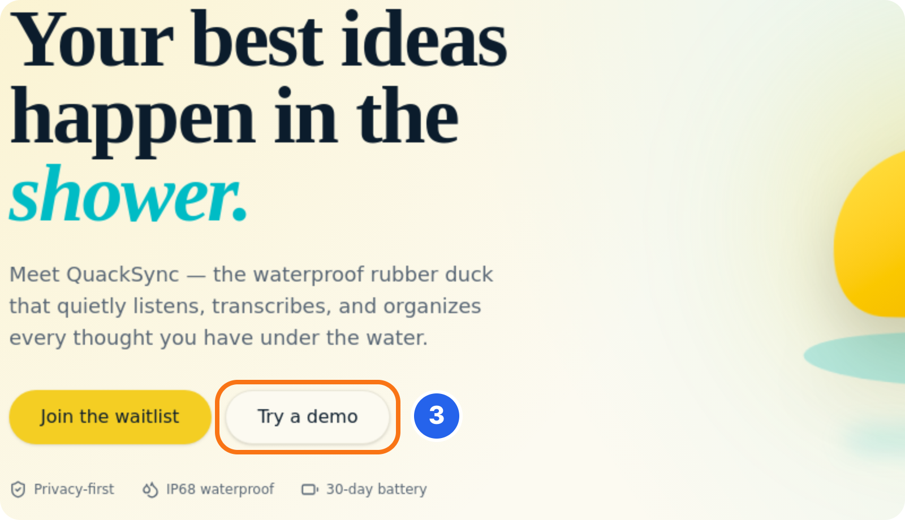
Lovable
- 1Paste your pitch
- 2Answer narrowly
- 3Click through
- 4Delete inventions
- 5Publish one link
- 6Link your button
36 minutes from the first prompt to the last edit.
How-to · QuackSync · step 4 of 6
Delete what the builder made up
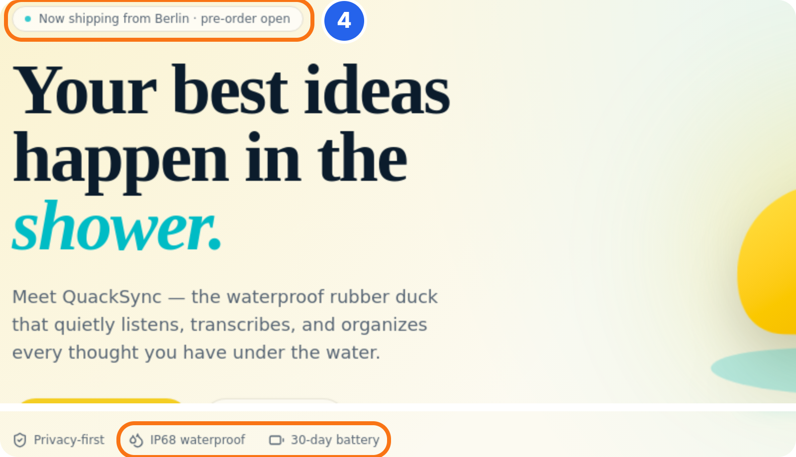
- 1Paste your pitch
- 2Answer narrowly
- 3Click through
- 4Delete inventions
- 5Publish one link
- 6Link your button
"Now shipping." "IP68." "30-day battery."
Nobody said so. The builder invented it.
Nobody said so. The builder invented it.
How-to · QuackSync · step 5 of 6
Publish, then share one link
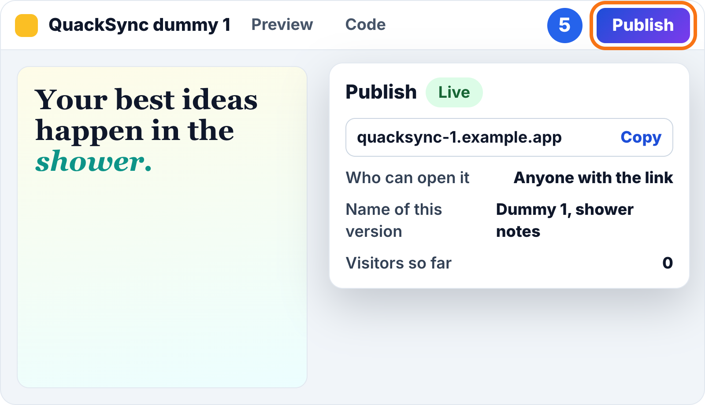
- 1Paste your pitch
- 2Answer narrowly
- 3Click through
- 4Delete inventions
- 5Publish one link
- 6Link your button
One link per dummy. Name it, so you know which one they saw.
How-to · QuackSync · step 6 of 6
Put it behind your page's button
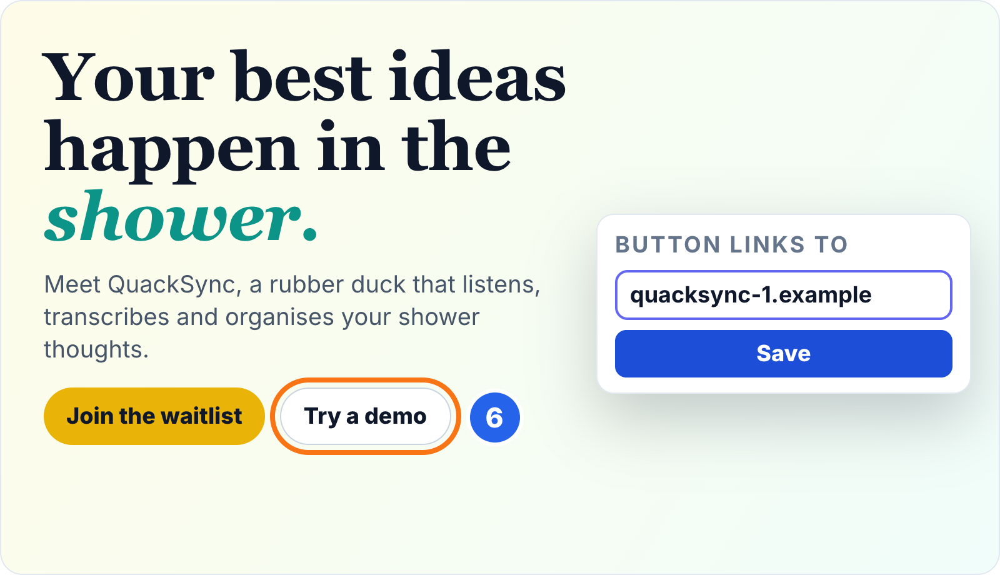
- 1Paste your pitch
- 2Answer narrowly
- 3Click through
- 4Delete inventions
- 5Publish one link
- 6Link your button
Only after your Validating problems (M04) result is logged. The line never moves.
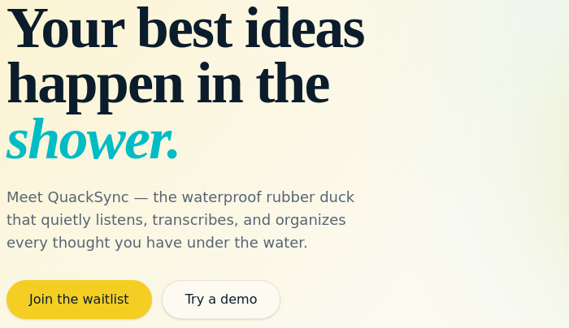
Tools · as of October 2026
Any builder works. Pick one
- Lovable5 free credits a day
 Figma Make500 AI credits a month free
Figma Make500 AI credits a month free- Replit1 free app, offline after 30 days
- Framer500 AI credits to try
Demos
Use guided or unguided demos
Depending on your use case. Usually both
Guided · you lead
Unguided · they decide
![Left, guided: a video call recorded with consent. Lena, a recruiter, shares her screen with the click dummy, a morning check whose alert says Sara K. went quiet, no reply for 26 hours, with Call her now and Snooze, and a Book a 2-week trial button. Her cursor is on Call her now. The founder is muted, wrote in the chat Here's the link. What would you do first? and notes: clicked the alert first, can I call from here? Right, unguided: the same dummy opened from the page link, with click marks and the last 7 days, 38 opened the link, 21 opened the alert, 6 clicked the ask](media/m05-demo-types.png)
Guided demos · tip 1 of 3
Let them drive. You stay quiet
From
"Let me show you how it works."
To
"Here's the link. What would you do first?"
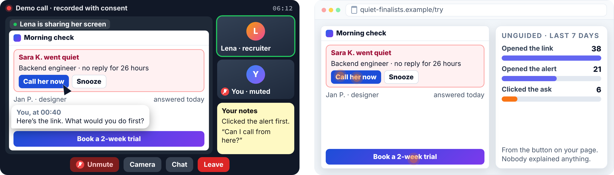
Guided demos · tip 2 of 3
Ask about today, not about your dummy
From
"Do you like it?"
To
"What did you do the last time this happened?"
Guided demos · tip 3 of 3
End with an ask that costs something
From
"Would you use this?"
To
"Can we book your first trial week now?"
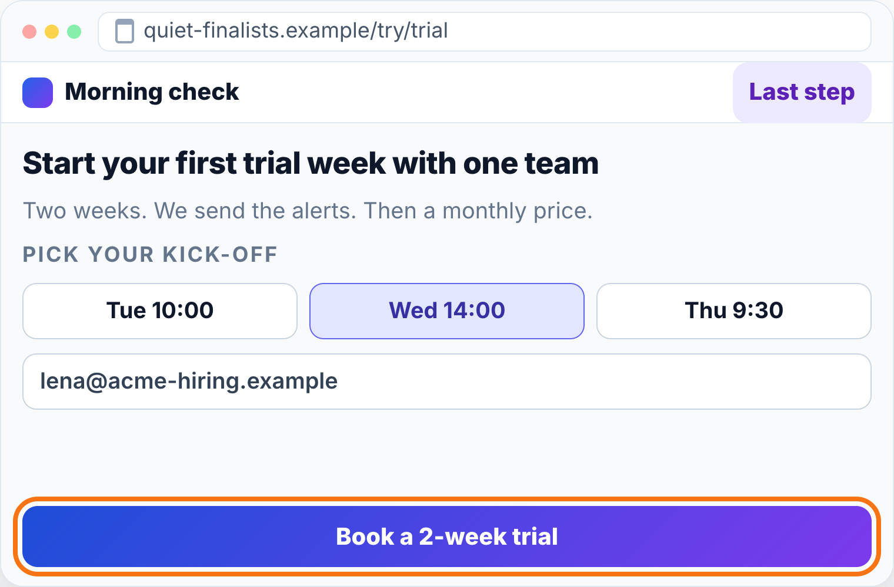
The ask
Climb the ask until it costs them something
Signal below the wallet line, validation above it
Complimentcosts nothing
Emailattention
Time bookedtheir calendar
Introductiontheir reputation
Letter of intenta signature
Depositmoney back
Paymentvalidation
wallet line
Research
Rough finds the same problems as polished
Sketched and HTML websites, on paper and on screen
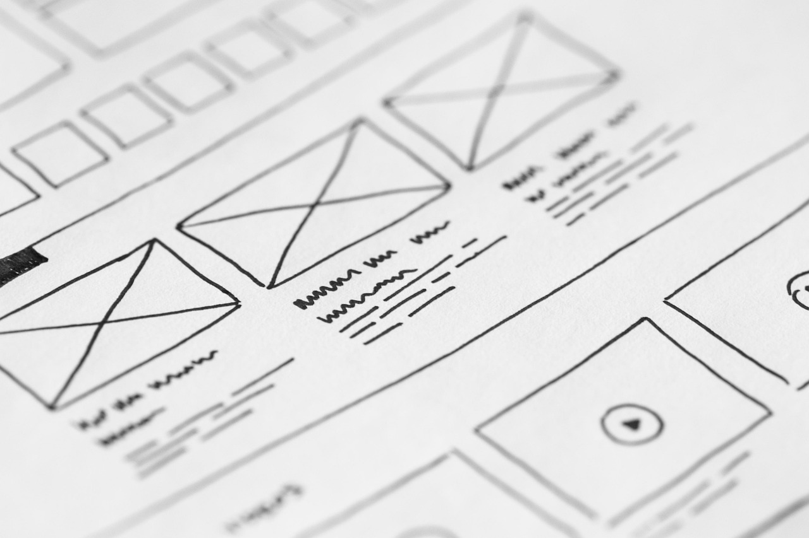
Paper sketch
Polished screen
Both find substantially the same usability problems
But rough prototypes mislead on task times and looks. Test whether people want it with the ask
Show the real thing · analytics
Watch what they do when you're not there
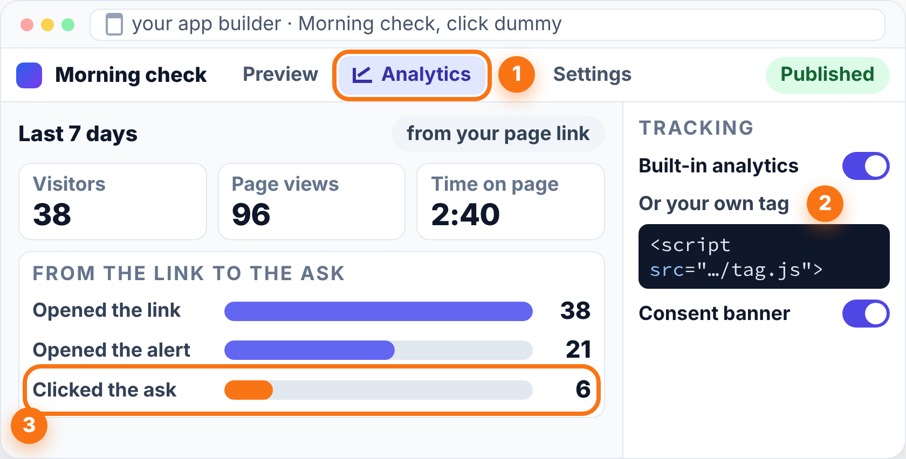
- 1Turn on analytics
- 2Or add your tag
- 3Count who reached the ask
Consent rules from Validating problems (M04) apply here too.
AI is not paying for your service, real humans are!
Before you decide, show every dummy at least
7times
To people from your segment, in guided demos.
Then read your line, keep the winner, bin the rest.
Now you · alone · 3 minutes
Write your ask
Output
Three names, one ask
Input 4 of 4 · Show it · the answers
Show it: they drive, you end with an ask
1
How fast can you build a click dummy?
In hours with an AI builder. Ours took 36 minutes
2
How do you show it?
Guided demos where they drive and you stay quiet, and unguided behind your page
3
What counts as a result?
An ask that costs them something. A dummy collects signal, only a payment validates
Chapter 7 of 9
Wrap-up and check-out
Two pictures to keep, three questions to reflect on, and your week.
Recap · today
You went wide, then tested small
Recap · rung four
From today you climb to the mock-up
Reflection 1 of 3 · the content
What could you apply?
🛠️
What could you apply?
🤕
What gave you a hard time?
Reflection 2 of 3 · the process
Man vs. machine
🤖
Where did AI actually help you?
🧠
Where was your genius needed?
🕴️
What are your best hacks to share?
Reflection 3 of 3 · the results
Rose, thorn, bud
🌹
What was the breakthrough today?
🌵
What was the hardest part today?
🌱
What is an idea/feature you didn't have time to finish, but want to explore later?
Build one click dummy per founder and show the dummies in 15 guided demos per student with people from your segment, at least 7 per dummy, each ending in an ask that costs them something.
15demos each
The learning floor is one click dummy per team and 5 such demos per student.
Your line: fewer than 2 of the first 7 people from your segment accept a dummy's ask, and that dummy goes.
Homework · how to do it
Let them drive. End with an ask
1
Build with your AI builder in 4 hours or less. Rebuild, don't patch.
2
Book sign-ups first, then interviewees, then your segment's groups.
3
Let them drive. Share the link in a call. Watch, stay quiet.
!
Watch out. Explaining makes it a pitch.
4
End with the ask, a trial slot or a pre-order. Only a payment validates.
5
Converge midweek. Keep the dummy with the most accepted asks.
6
Write your MVP. One feature, what stays manual, the price.
7
Put the winner behind your page's button once your Validating problems (M04) result is logged. Those clicks are signal, not demos.
8
Get a blind second opinion. Give an AI your raw notes, minus hypothesis and names. Note where it disagrees.
Homework · nothing by hand
Every demo lands in your log. Your agent writes it
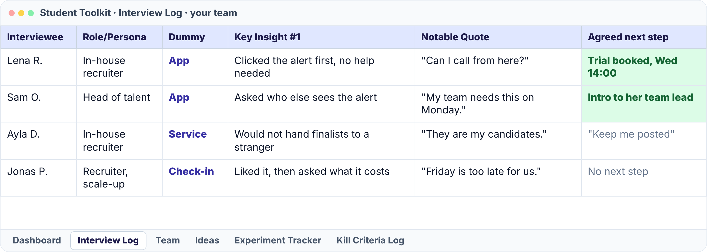
Your agentlog-demo
Log this demo. Write what she did, not what she said she would do. Mark the ask as accepted or not.
demo-lena-transcript.txt
demo-lena-transcript.txt
Done, one row. Lena R., app dummy. Clicked the alert first. Ask accepted, trial on Wednesday at 14:00.
That makes 2 accepted asks on the app dummy. Your line is 2 of the first 7, so it stays.
Reply…
Homework · what you come back with
Good is heard, counted and asked for
GOOD
WEAK
10x
"An hour, not a week", heard in 9 demos
"Faster", assumed
Demos
45 guided, 3 dummies
12 friends clicked
Asks
8 trials booked, 1 deposit
"Keep me posted"
References · 1 of 3
Sources in this deck
- Bajwa, S. S., Wang, X., Nguyen Duc, A., & Abrahamsson, P. (2017). "Failures" to be celebrated. Empirical Software Engineering, 22(5), 2373–2408.
- Bisbee, J., Clinton, J. D., Dorff, C., Kenkel, B., & Larson, J. M. (2024). Synthetic replacements for human survey data? Political Analysis, 32(4), 401–416.
- Blomfield, T. (2025). How to get the most out of vibe coding. Y Combinator Startup Library.
- Brown, A. L., Imai, T., Vieider, F. M., & Camerer, C. F. (2024). Meta-analysis of empirical estimates of loss aversion. Journal of Economic Literature, 62(2), 485–516.
- Campbell, D. T. (1960). Blind variation and selective retention in creative thought as in other knowledge processes. Psychological Review, 67(6), 380–400.
- Dow, S. P., Glassco, A., Kass, J., Schwarz, M., Schwartz, D. L., & Klemmer, S. R. (2010). Parallel prototyping leads to better design results. ACM TOCHI, 17(4), 18.
- Faulkner, L. (2003). Beyond the five-user assumption. Behavior Research Methods, Instruments, & Computers, 35(3), 379–383.
References · 2 of 3
Sources in this deck
- Fitzpatrick, R. (2013). The Mom Test. CreateSpace.
- Friedman, J., Tan, G., et al. (2025, March 5). Vibe coding is the future. Y Combinator, Lightcone.
- Gould, J. D., Conti, J., & Hovanyecz, T. (1983). Composing letters with a simulated listening typewriter. Communications of the ACM, 26(4), 295–308.
- Gourville, J. T. (2006). Eager sellers and stony buyers. Harvard Business Review, 84(6).
- Hämäläinen, P., Tavast, M., & Kunnari, A. (2023). Evaluating large language models in generating synthetic HCI research data. CHI 2023.
- Kelley, J. F. (1984). An iterative design methodology for user-friendly natural language office information applications. ACM TOIS, 2(1), 26–41.
- Masters, B. (2012). Peter Thiel's CS183: Startup, class 12 notes (guest Reid Hoffman).
- Osterwalder, A. (2012, January 10). The Customer Value Map v.0.8. Strategyzer.
- Osterwalder, A., Pigneur, Y., Bernarda, G., & Smith, A. (2014). Value Proposition Design. Wiley.
References · 3 of 3
Sources in this deck
- Ries, E. (2011). The Lean Startup. Crown Business.
- Rosala, M., & Moran, K. (2024). Synthetic users: If, when, and how to use AI-generated "research". Nielsen Norman Group.
- Samuelson, W., & Zeckhauser, R. (1988). Status quo bias in decision making. Journal of Risk and Uncertainty, 1(1), 7–59.
- Sauer, J., & Sonderegger, A. (2009). The influence of prototype fidelity and aesthetics of design in usability tests. Applied Ergonomics, 40(4), 670–677.
- Seibel, M. (2019). How to plan an MVP. Y Combinator Startup Library.
- Thiel, P., & Masters, B. (2014). Zero to One. Crown Business.
- Virzi, R. A. (1992). Refining the test phase of usability evaluation. Human Factors, 34(4), 457–468.
- Virzi, R. A., Sokolov, J. L., & Karis, D. (1996). Usability problem identification using both low- and high-fidelity prototypes. CHI 96, 236–243.
- Walker, M., Takayama, L., & Landay, J. A. (2002). High-fidelity or low-fidelity, paper or computer? Proceedings of the HFES Annual Meeting, 46(5), 661–665.
See you next time!
Module 05 · Workshop · 90 minutes
Workshop: Build a click dummy, book the demos
Every founder builds one click dummy and books the first demos.
Workshop · step 1 of 3
Go wide, then pick by 10x
1STEP 1 · 25 MIN
GO WIDE, THEN PICK BY 10X
Real options, judged against what your segment uses today
- Read your Validating problems (M04) line next to your result
- Name the status quo and what it costs
- Three solutions per founder, one without software, then ask AI
- Keep one each, under 10 words, one 10x dimension
- Log the line, dated, before anyone sees a dummy
Output One pick per founder, a dated lineMinutes 25
Workshop · step 2 of 3
From text to interface
2STEP 2 · 40 MIN
FROM TEXT TO INTERFACE
A dummy that shows one feature and ends with an ask
- Cut to the one feature your segment cares about
- The screen shows the outcome, the rest stays manual
- Prompt the builder: one path, 1 to 5 prompts
- The last screen asks for a trial slot, LOI or pre-order
- Rehearse with another team. Classmates never count
Output One link per founder, ending in an askMinutes 40
Workshop · step 3 of 3
First demos, then commit
3STEP 3 · 25 MIN
FIRST DEMOS, THEN COMMIT
Leave with demos on the calendar
- Message sign-ups, Problem space (M03) interviewees, then segment groups
- Run a demo now if someone answers
- They click, you watch, log it in the Interview Log
- Each student picks floor or full bar
- Set your midweek day for reading the line
Output Booked demos, targets, midweek dayMinutes 25
Arrived empty-handed?
Start from your interviews
No sign-ups? Work from your interviews, proof assumed. Switched segment? Post your dummy in the new segment's groups.
Build one click dummy per founder and show the dummies in 15 guided demos per student with people from your segment, at least 7 per dummy, each ending in an ask that costs them something.
15demos each
The learning floor is one click dummy per team and 5 such demos per student.
Your line: fewer than 2 of the first 7 people from your segment accept a dummy's ask, and that dummy goes.
See you next time!
Module 05 · Case discussion · about 90 minutes
Case discussion: Freeletics
Stand with three Munich founders in April 2013 and decide what goes on sale by Monday.
Case · Freeletics GbR, Munich, a Thursday in April 2013 · vote 1 of 2
There is no money left. What is on sale on Monday?
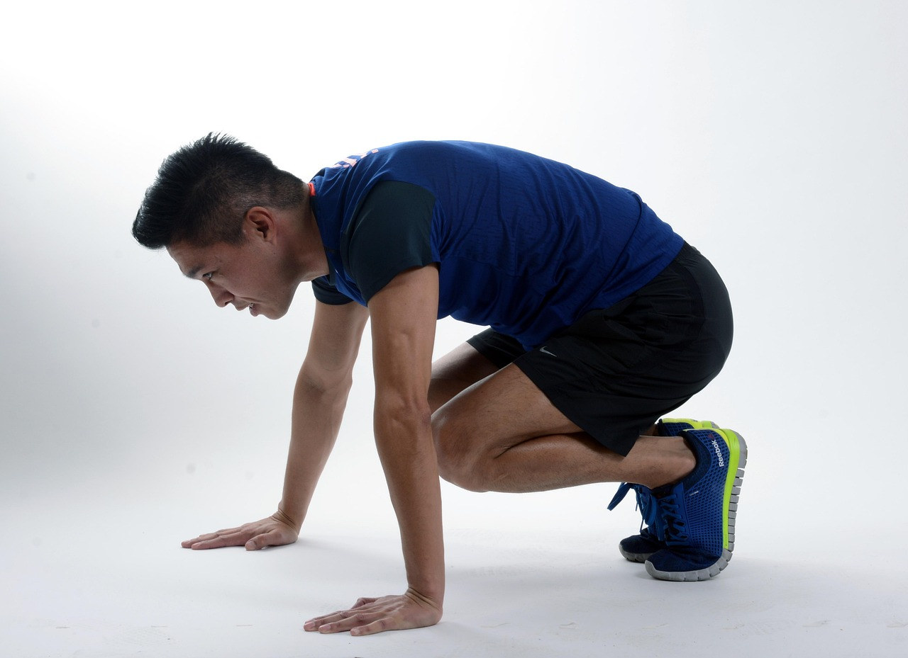
FreeleticsOption 1
An e-book with the workouts
Hands
Option 2
The weekly parts at €1.99 as they stand
Hands
Option 3
Nothing new until the app
Hands
Case · what happened until April 2013
Everything before one Thursday
Case · Exhibit 1
What the shop offered, 23 to 29 March 2013
| Page | Captured | What it offered | Price |
|---|---|---|---|
| Home page | 24 March | A Basic Package of workouts for an email address | Free |
| Product list | 23 and 29 March | Cardio&Strength, Cardio and Strength Training Guide | €1.99 each |
| Cardio&Strength guide | 24 March | Part 1, workouts and schedules for one week, download link within 15 minutes | €1.99 per part |
| Cardio guide | 28 and 29 March | Parts 1 and 2 | €1.99 per part |
| App | 24 March | A free training app, linked to Apple's App Store | Free |
| Jobs | 29 March | A call for mobile developers |
Case · status quo · 15 minutes
Against what did Freeletics compete?
And where could it be ten times better?
| German fitness market, end of 2012 | Value |
|---|---|
| Members of fitness facilities, 2012 | 7.9 million |
| Fitness facilities | 7,566 |
| Average membership fee, gross, 2012 | €45.42 |
| Industry revenue | €3.8 billion |
| Market share of chains | 47.2 percent |
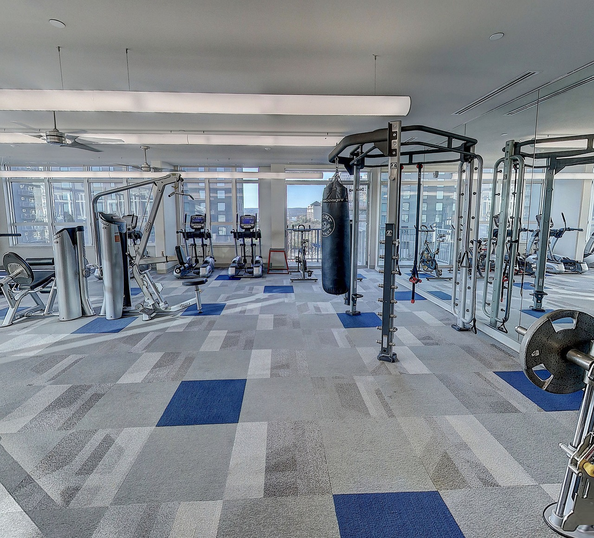
Case · evidence · 15 minutes
What did people do that cost them something?
Case · the smallest offer and the line · 30 minutes
What could ship by Monday, and what stays manual?
Then, which form would you have kept, and by what line?
Forms on 29 March
with or without software
What people did
heard, measured, assumed
Signal or payment
which could validate?
The smallest offer
shows, manual, price
Case · vote 2 of 2
Same question. Who moved, and why?
Option 1
An e-book with the workouts
Hands
Option 2
The weekly parts at €1.99 as they stand
Hands
Option 3
Nothing new until the app
Hands
See you next time!